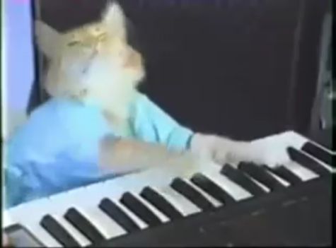
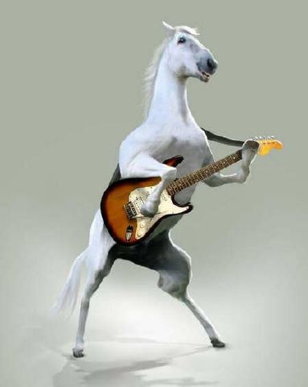
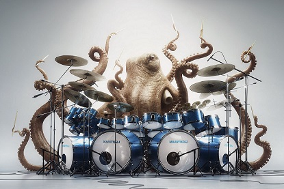

What We Do
We are a passionate team of individuals that have united with the purpose of bringing our love of music and animals together in order to make the world more musically diverse while providing new opportunities to shelter animals.
Classes
Here are the classes we currently offer
Piano
Want your pet to be on par with the great Keyboard Cat (may he rest in peace), then come on down and sign your pet up for Piano lessons!
Electric Guitar
Is your pet totally not rad? Do you often find yourself not inviting your pet to parties because they're squarer than Steve from the office who stands at the watercooler? Well come and check out our electric guitar classes for pets. Make sure your pets are 2cool4school ya feel?
Bass
Get your pet to live with a little rumble in their life and give them bass guitar lessons.
Drums
You like it loud. So does your pets.Let them rock out and party hard on the drum kit with this course.
Sax
Smooth, sensual, saxy. This course will teach your animal to play improv jazz as well as blues, turning them into one silky smooth player.